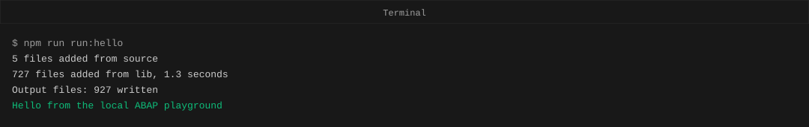
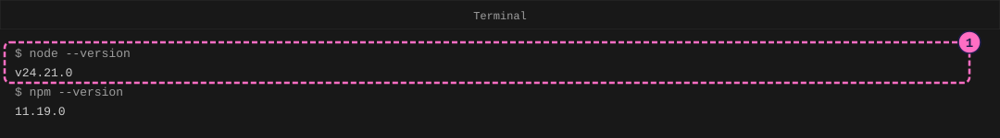
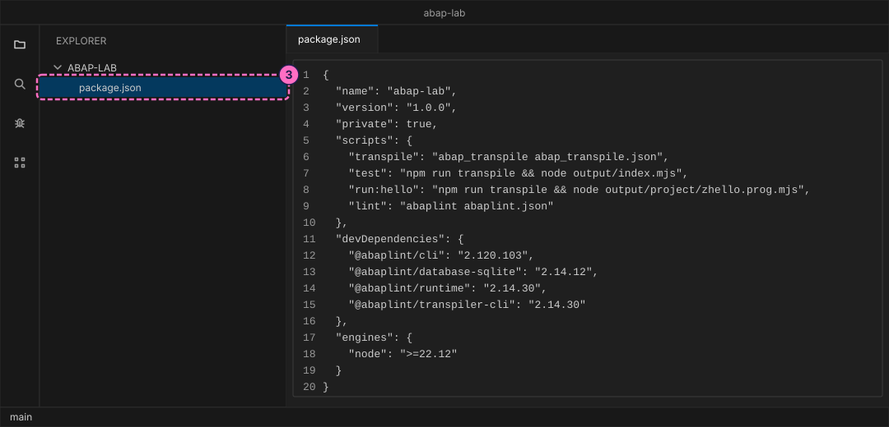
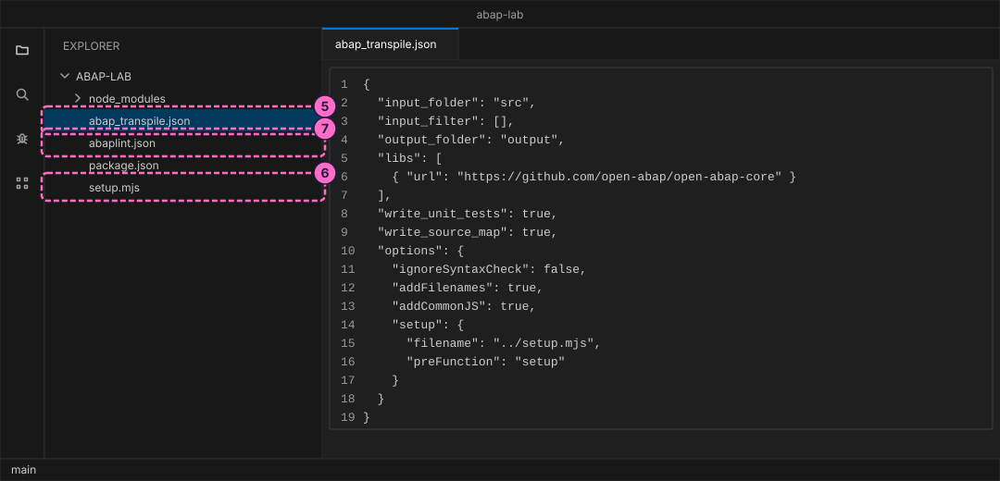
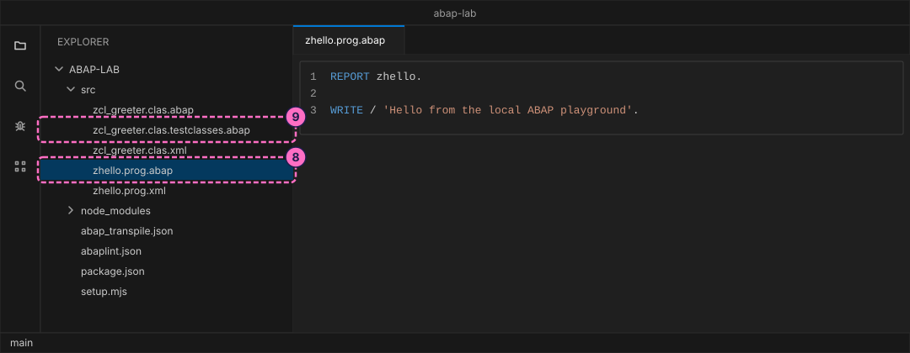
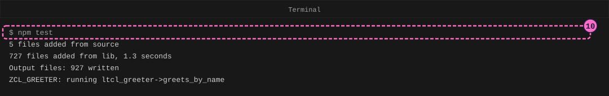
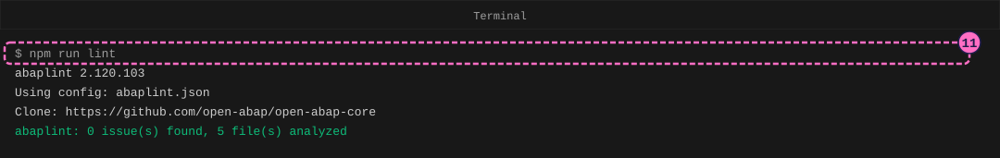

ABAP Guide: Set Up a Local ABAP Playground
|
This content was generated with the assistance of AI and should be verified against the official documentation before being relied on in production. |
Checked on 2026-11-13 against open-abap (transpiler 2.14.30, open-abap-core a9acc41), abaplint 2.120.103 and Node.js 24.21.
What you build
You build a small project folder, named abap-lab, in which ABAP programs run on your own computer. You install Node.js, write the four configuration files of the project, add two sample ABAP objects (a report named zhello and a class named zcl_greeter with one unit test), and run them with three commands: npm test runs the unit test, npm run lint checks the code with abaplint, and npm run run:hello runs the report.
The playground is open-abap, a community open-source project, not SAP software. A tool called a transpiler translates your ABAP files into JavaScript, and Node.js runs the JavaScript. It implements only a part of the ABAP language and has no SAP GUI, no ABAP Dictionary tools, no CDS and no RAP, so a program that works here still needs a check on a real SAP system before you rely on it there.

Before you start
-
No account is needed: Node.js, the abaplint tools and open-abap install from the public npm registry and from GitHub without signing in. The licences you accept by installing (MIT for the abaplint packages and for open-abap-core) are listed in the README of the ABAP lab. The computer needs an internet connection for the installation and for the first transpile, which downloads the open-abap library from GitHub.
-
You need a terminal (a window where you type commands) and a text editor. The steps use Visual Studio Code, a free editor, but any editor that saves plain text files works for everything except the extension step.
-
The files of this guide are also in the folder
modules/ROOT/examples/abap-lab/of the documentation sources. Type them yourself rather than copying them, so that you meet each command and its output on your own screen. -
Read Getting Started first if you have never seen an ABAP program. The guide Your First ABAP Program is the next one, and it adds a class of your own to this project.
-
The figures are drawings of the editor and the terminal, not screenshots. A highlighted box with a number marks the file or line of the step with the same number.
Steps
Install Node.js
Node.js is a program that runs JavaScript outside a browser. It comes with npm, a tool that downloads packages (ready-made programs) and runs the scripts of a project.
-
Install a current Node.js, version 22.12 or newer, from the Node.js download page, with the installer for your operating system. Then open a terminal and ask for the two versions:
node --version npm --versionEach command prints a version number. This guide was checked with
v24.21.0and11.19.0; yours may be newer.
Create the project
A project is a folder with a package.json file. That file is the project’s list of needs: its name, the packages it uses and the scripts (named commands) you can run with npm run.
-
In the terminal, create the folder and go into it. Open the same folder in your editor (in Visual Studio Code: File, then Open Folder).
mkdir abap-lab cd abap-lab -
In the folder, create the file
package.jsonwith this content. ThedevDependenciesare the four packages of the playground: the transpiler (@abaplint/transpiler-cli), its runtime (@abaplint/runtime), the in-memory database that ABAP SQL uses later (@abaplint/database-sqlite) and the checker abaplint (@abaplint/cli). The fourscriptsare the commands you run in this guide.{ "name": "abap-lab", "version": "1.0.0", "private": true, "scripts": { "transpile": "abap_transpile abap_transpile.json", "test": "npm run transpile && node output/index.mjs", "run:hello": "npm run transpile && node output/project/zhello.prog.mjs", "lint": "abaplint abaplint.json" }, "devDependencies": { "@abaplint/cli": "2.120.103", "@abaplint/database-sqlite": "2.14.12", "@abaplint/runtime": "2.14.30", "@abaplint/transpiler-cli": "2.14.30" }, "engines": { "node": ">=22.12" } }Notice that
testandrun:hellostart withnpm run transpile &&. The two ampersands mean "and then, only if that worked", so a command never runs old output after a failed transpile.
-
Install the packages. This downloads them into a new folder
node_modulesand creates the filepackage-lock.json, which records the exact versions. It prints a short summary:npm installadded 8 packages, and audited 9 packages in 3s 3 packages are looking for funding run `npm fund` for details found 0 vulnerabilitiesThe timing differs on your computer. Source: npm install (npm documentation)
Write the configuration files
Three more files tell the tools where your ABAP sources are and how to check them. Create each in the abap-lab folder.
-
Create
abap_transpile.json, the settings of the transpiler. It reads the ABAP files from the foldersrc, writes JavaScript into the folderoutput, loads the open-abap library from GitHub (libs), writes the code that runs ABAP Unit tests (write_unit_tests) and names the setup file of step 6.{ "input_folder": "src", "input_filter": [], "output_folder": "output", "libs": [ { "url": "https://github.com/open-abap/open-abap-core" } ], "write_unit_tests": true, "write_source_map": true, "options": { "ignoreSyntaxCheck": false, "addFilenames": true, "addCommonJS": true, "setup": { "filename": "../setup.mjs", "preFunction": "setup" } } } -
Create
setup.mjs. It runs before every program and test, and connects the in-memory database that open-abap uses in place of a real SAP database. The sample here does not read any table, but the later guides do.import {SQLiteDatabaseClient} from "@abaplint/database-sqlite"; import {MemoryDataset} from "@abaplint/runtime"; export async function setup(abap, schemas, insert) { abap.context.databaseConnections["DEFAULT"] = new SQLiteDatabaseClient(); await abap.context.databaseConnections["DEFAULT"].connect(); await abap.context.databaseConnections["DEFAULT"].execute(schemas.sqlite); await abap.context.databaseConnections["DEFAULT"].execute(insert); abap.context.dataset = new MemoryDataset(); } -
Create
abaplint.json, the settings of abaplint.filessays which files to check,syntaxsays which ABAP release to check against, andruleslists the checks to run. Without arulessection abaplint reports nothing, so the list matters.{ "global": { "files": "/src/**/*.*", "skipGeneratedGatewayClasses": true }, "dependencies": [ { "url": "https://github.com/open-abap/open-abap-core", "files": "/src/**/*.*" } ], "syntax": { "version": "v758", "errorNamespace": "^(Z|Y|LCL_|TY_|LIF_)" }, "rules": { "parser_error": true, "check_syntax": true, "unknown_types": true, "unused_variables": true, "keyword_case": { "style": "upper" }, "line_length": { "length": 120 }, "indentation": true, "whitespace_end": true } }Source: abaplint and abaplint rules

Add the sample ABAP objects
An ABAP object in the playground is stored as two files with the same name, the layout of the abapGit project: a .abap file with the source and a .xml file with the object’s attributes. A report is <name>.prog.abap and <name>.prog.xml. A class is <name>.clas.abap and <name>.clas.xml, and its unit tests go in a third file, <name>.clas.testclasses.abap. Create a folder src and add these files to it.
-
Create the report
src/zhello.prog.abapwith its attribute filesrc/zhello.prog.xml. TheREPORTstatement names the program, andWRITEprints a line in a classic list.REPORT zhello. WRITE / 'Hello from the local ABAP playground'.<?xml version="1.0" encoding="utf-8"?> <abapGit version="v1.0.0" serializer="LCL_OBJECT_PROG" serializer_version="v1.0.0"> <asx:abap xmlns:asx="http://www.sap.com/abapxml" version="1.0"> <asx:values> <PROGDIR> <NAME>ZHELLO</NAME> <SUBC>1</SUBC> <RLOAD>E</RLOAD> <UCCHECK>X</UCCHECK> </PROGDIR> </asx:values> </asx:abap> </abapGit>Source: REPORT and WRITE (ABAP Keyword Documentation)
-
Create the class
src/zcl_greeter.clas.abapwith a methodgreetthat builds a greeting, its test filesrc/zcl_greeter.clas.testclasses.abapand its attribute filesrc/zcl_greeter.clas.xml. The test classltcl_greeteris markedFOR TESTING; its method creates the class, callsgreetand compares the answer with the expected text.CLASS zcl_greeter DEFINITION PUBLIC FINAL CREATE PUBLIC. PUBLIC SECTION. METHODS greet IMPORTING name TYPE string RETURNING VALUE(result) TYPE string. ENDCLASS. CLASS zcl_greeter IMPLEMENTATION. METHOD greet. result = |Hello, { name }!|. ENDMETHOD. ENDCLASS.CLASS ltcl_greeter DEFINITION FINAL FOR TESTING DURATION SHORT RISK LEVEL HARMLESS. PRIVATE SECTION. METHODS greets_by_name FOR TESTING. ENDCLASS. CLASS ltcl_greeter IMPLEMENTATION. METHOD greets_by_name. DATA(cut) = NEW zcl_greeter( ). cl_abap_unit_assert=>assert_equals( act = cut->greet( `World` ) exp = `Hello, World!` ). ENDMETHOD. ENDCLASS.<?xml version="1.0" encoding="utf-8"?> <abapGit version="v1.0.0" serializer="LCL_OBJECT_CLAS" serializer_version="v1.0.0"> <asx:abap xmlns:asx="http://www.sap.com/abapxml" version="1.0"> <asx:values> <VSEOCLASS> <CLSNAME>ZCL_GREETER</CLSNAME> <LANGU>E</LANGU> <DESCRIPT>Greeter</DESCRIPT> <STATE>1</STATE> <CLSCCINCL>X</CLSCCINCL> <FIXPT>X</FIXPT> <UNICODE>X</UNICODE> </VSEOCLASS> </asx:values> </asx:abap> </abapGit>
Run the sample
-
Run the unit test. The transpiler first translates the ABAP files into JavaScript, then Node.js runs the tests. The first run also downloads the open-abap library, so it takes a little longer. The transpiler prints how many files it found and how many output files it wrote (the figure shows one example run; your counts will differ); the last line comes from the test:
npm testZCL_GREETER: running ltcl_greeter->greets_by_nameThe command ends without an error message, which means the test passed. The figure leaves out the lines that name the cloned library version.

-
Check the code with abaplint. It prints its version, the configuration file it used and the ABAP release it checked against, and ends with a count of findings:
npm run lintabaplint: 0 issue(s) found, 5 file(s) analyzedThe figure leaves out the release lines and the blank lines.

-
Optional: install the abaplint extension in Visual Studio Code. In the Extensions view, search for
abaplintand install the one published by Lars Hvam; it comes from the Visual Studio Code Marketplace and needs no account. It reads the sameabaplint.jsonand, according to its Marketplace page, offers linting with a problems view, go to definition, find references and quick fixes. Open an.abapfile of the project to use it. The commands of the other steps do not depend on it. Source: abaplint (Visual Studio Marketplace) -
Run the report:
npm run run:hello
Check the result
npm run run:hello ends without an error and, after the transpiler’s file counts, prints Hello from the local ABAP playground. npm test prints the test line and ends without an error, and npm run lint prints abaplint: 0 issue(s) found, 5 file(s) analyzed. If all three work, the playground is ready for Your First ABAP Program.
Variations
-
Change the text in
src/zhello.prog.abapand runnpm run run:helloagain. -
Change the expected text in the test file from
Hello, World!toHello, Mars!and runnpm testto watch a test fail. The guide on ABAP Unit tests covers this in detail. -
Add a line such as
DATA unused TYPE i.to the report and runnpm run lintto see abaplint report an unused variable.
What can go wrong
| Symptom | Cause | Fix |
|---|---|---|
|
The packages are not installed: |
Run |
|
The terminal is in a folder without a |
Change into the |
|
You ran |
Run |
|
The report file has a different name, for example |
Rename the file to |
|
|
Add the |
Where to go next
-
Next guide: Your First ABAP Program.
-
Reference: Getting Started.